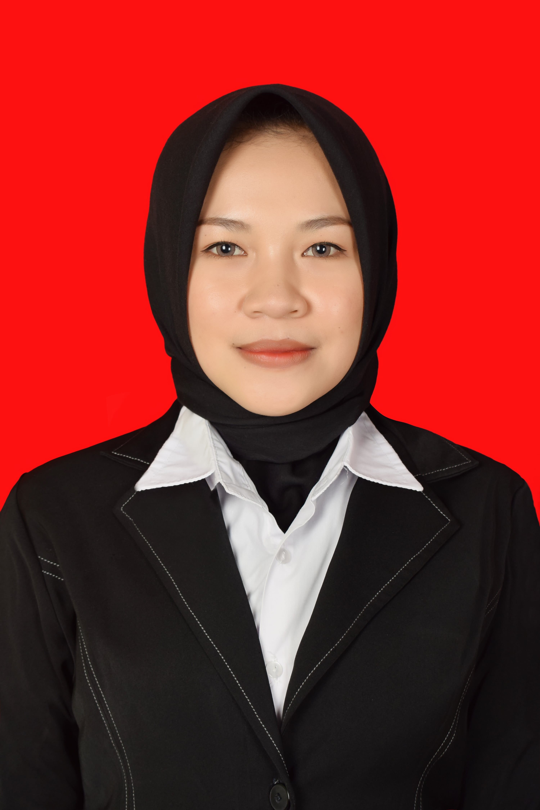

SMP Negeri 15 Yogyakarta
Saya Ina Arifa, mahasiswi Prodi Pendidikan IPS Universitas Negeri Yogyakarta, sedang melaksanakan Program Profesi Guru (Calon Guru) tahun 2026.
SMP Negeri 15 Yogyakarta

NIM: 25105260500
Program: Pendidikan Profesi Guru (Calon Guru) Pendidikan IPS tahun 2026
Asal: Borobudur, Magelang
Saya Ina Arifa, mahasiswi Program Profesi Guru (Calon Guru) Pendidikan IPS tahun 2026, berasal dari Borobudur, Magelang. Dikenal sebagai tempat berdirinya Candi Borobudur, warisan peradaban yang menyimpan jejak sejarah dan nilai luhur budaya, Borobudur mengajarkan bahwa setiap tempat memiliki cerita dan setiap warisan menyimpan pelajaran. Dari tanah yang kaya akan sejarah dan kearifan lokal ini, saya belajar bahwa ilmu tidak hanya ditemukan dalam buku, tetapi juga dalam kehidupan masyarakat dan lingkungan sekitar.
Sebagai calon guru Pendidikan IPS, saya ingin membawa semangat tersebut ke dalam pembelajaran: mengajak peserta didik memahami bahwa sejarah, geografi, dan kehidupan sosial bukanlah sesuatu yang jauh dari mereka, melainkan bagian dari lingkungan tempat mereka tumbuh. Sebab, pendidikan yang bermakna adalah pendidikan yang mampu menghubungkan pengetahuan dengan kehidupan nyata, sekaligus menumbuhkan kesadaran akan identitas dan tanggung jawab sebagai bagian dari masyarakat.
Menjadi guru bagi saya bukan sekadar profesi, melainkan sebuah tanggung jawab untuk terus belajar, beradaptasi, dan memberikan yang terbaik bagi murid. Saya menyadari bahwa peran guru tidak selalu mudah, karena dihadapkan pada berbagai tantangan, baik dari segi karakter murid maupun perkembangan zaman. Namun, justru dari situlah saya termotivasi untuk menjadi pendidik yang sabar, terbuka, dan mampu menciptakan pembelajaran yang bermakna. Saya ingin hadir sebagai guru yang tidak hanya menyampaikan materi, tetapi juga membimbing, mendengarkan dan membantu murid menemukan potensi terbaik dalam dirinya, sehingga mereka dapat tumbuh menjadi pribadi yang mandiri dan berkarakter.
Agar dapat berkontribusi secara nyata dalam mencerdaskan kehidupan bangsa melalui pendidikan yang bermakna dan berpusat pada murid. Saya ingin membantu setiap murid mengembangkan potensi akademik maupun non akademik secara optimal, serta menanamkan nilai-nilai karakter seperti tanggung jawab, kejujuran, dan kerja sama. Selain itu, saya bertujuan menjadi pendidik yang adaptif terhadap perkembangan zaman, mampu menciptakan suasana belajar yang inklusif, serta membimbing murid agar memiliki keterampilan berpikir kritis, kreatif, dan siap menghadapi tantangan di masa depan.
Empat siklus Praktik Mengajar Mandiri yang dijelaskan secara rinci. Silakan pilih siklus untuk melihat detailnya.
Praktik Mengajar Mandiri — Siklus 1
Praktik Mengajar Mandiri — Siklus 2
Praktik Mengajar Mandiri — Siklus 3
Praktik Mengajar Mandiri — Siklus 4
| Nama Mahasiswa | Ina Arifa |
| NIM | 25105260500 |
| Prodi/Bidang Studi | Ilmu Pengetahuan Sosial |
| Sekolah PPL Terbimbing | SMP Negeri 15 Yogyakarta |
| Materi | Globalisasi |
| Kelas / Semester | IX / Ganjil – 2026/2027 |
Kegiatan praktik mengajar dilaksanakan pada mata pelajaran IPS kelas IX semester gasal di SMP Negeri 15 Yogyakarta dengan materi globalisasi. Pembelajaran dirancang dalam dua pertemuan dengan alokasi waktu 4 JP, masing-masing pertemuan terdiri atas 80 menit. Kegiatan pembelajaran berfokus pada pemahaman konsep globalisasi, faktor pendorong terjadinya globalisasi, dampak positif dan negatif globalisasi, serta sikap bijak dalam menghadapi pengaruh globalisasi tanpa meninggalkan nilai-nilai budaya bangsa.
Pada pertemuan pertama, kegiatan pembelajaran diawali dengan salam, doa, pengecekan kesiapan murid, pemberian motivasi, penyampaian tujuan pembelajaran, serta apersepsi mengenai materi perubahan sosial. Guru kemudian memberikan pertanyaan pemantik, yaitu mengapa murid lebih mengenal tren dance luar negeri atau artis K-Pop dibandingkan tarian daerah Indonesia. Pertanyaan tersebut digunakan untuk menghubungkan pengalaman sehari-hari murid dengan materi globalisasi. Selanjutnya, guru menayangkan video tentang pengaruh globalisasi dan budaya asing di Indonesia sebagai stimulus untuk mengidentifikasi permasalahan. Murid dibagi menjadi beberapa kelompok yang terdiri atas 4–5 orang untuk mengumpulkan informasi, mengerjakan LKPD, mendiskusikan hasil pengamatan, dan mempresentasikan hasil diskusi. Kegiatan diakhiri dengan penarikan kesimpulan, refleksi pembelajaran, kesempatan bertanya, dan penyampaian materi yang akan dipelajari selanjutnya.
Pada pertemuan kedua, pembelajaran diawali dengan mengulas materi sebelumnya dan memberikan pertanyaan pemantik mengenai dampak apabila murid mengikuti semua tren luar negeri tanpa menyaringnya. Guru menggunakan gambar tentang dampak globalisasi untuk membantu murid memahami permasalahan yang dibahas. Murid kembali bekerja dalam kelompok untuk menganalisis studi kasus mengenai kecenderungan generasi muda mengenal budaya populer luar negeri dibandingkan budaya lokal. Melalui LKPD, murid diminta mengidentifikasi masalah, menjelaskan dampak positif dan negatif globalisasi budaya, serta merumuskan upaya agar tetap mengikuti perkembangan global sekaligus melestarikan budaya lokal. Hasil diskusi kemudian dipresentasikan dan dibahas bersama. Pada akhir pembelajaran, guru dan murid menyimpulkan materi, melakukan refleksi, serta melaksanakan asesmen untuk mengetahui pemahaman murid terhadap materi globalisasi.
Model pembelajaran yang digunakan adalah Problem Based Learning (PBL), yaitu pembelajaran yang menjadikan permasalahan sebagai titik awal untuk membangun pemahaman murid. Model ini dipilih karena materi globalisasi berkaitan erat dengan berbagai fenomena nyata yang dapat ditemukan dalam kehidupan sehari-hari.
Penerapan PBL dalam rancangan pembelajaran dapat dilihat melalui lima tahapan berikut:
Secara keseluruhan, PBL sesuai dengan materi globalisasi karena mendorong murid tidak hanya menghafal konsep, tetapi juga menghubungkannya dengan fenomena sosial dan merumuskan solusi terhadap permasalahan yang ditemukan.
Berdasarkan pengalaman mengajar dan analisis desain pembelajaran IPS materi Globalisasi, saya menyadari bahwa pembelajaran yang baik perlu menghubungkan materi dengan kehidupan sehari-hari murid agar lebih menarik dan mudah dipahami. Penggunaan model Problem Based Learning (PBL), video, gambar, dan LKPD dapat membantu murid menganalisis permasalahan serta mendorong mereka untuk berdiskusi dan menyampaikan pendapat. Selain itu, pembelajaran ini juga memberikan kesempatan untuk menanamkan sikap bijak dalam menghadapi globalisasi tanpa meninggalkan budaya lokal.
Namun, saya menyadari bahwa pelaksanaan pembelajaran masih memiliki tantangan, terutama dalam mengatur waktu, mengantisipasi kendala penggunaan teknologi, dan memastikan seluruh murid terlibat aktif dalam diskusi kelompok. Kegiatan evaluasi terhadap solusi yang dihasilkan murid juga perlu diperkuat agar mereka tidak hanya mampu menyampaikan kesimpulan, tetapi juga menjelaskan alasan dari solusi yang dipilih. Melalui refleksi ini, saya belajar bahwa guru perlu merancang pembelajaran secara matang, fleksibel, dan memperhatikan kebutuhan murid agar proses pembelajaran dapat berjalan lebih efektif dan bermakna.
Berdasarkan analisis dan refleksi pengalaman mengajar, desain pembelajaran IPS materi Globalisasi menggunakan model Problem Based Learning (PBL) memiliki kelebihan dalam mengaitkan materi dengan kehidupan sehari-hari, mendorong partisipasi murid, memanfaatkan media yang bervariasi, serta menanamkan sikap bijak dalam menghadapi pengaruh globalisasi. Namun, terdapat beberapa kelemahan yang perlu diperbaiki, yaitu pengelolaan waktu, ketergantungan pada teknologi, keterbatasan pertanyaan pemantik, kurang mendalamnya evaluasi solusi, dan kemungkinan adanya murid yang kurang aktif dalam diskusi kelompok. Oleh karena itu, pembelajaran mendatang perlu dirancang dengan alokasi waktu yang lebih efektif, media alternatif, pertanyaan yang lebih beragam, evaluasi pemecahan masalah yang lebih mendalam, dan pembagian peran kelompok yang jelas. Melalui perbaikan tersebut, saya berharap dapat menciptakan pembelajaran yang lebih efektif, melibatkan seluruh murid, serta memberikan pengalaman belajar yang bermakna dan sesuai dengan kebutuhan mereka.
| Nama Mahasiswa | Ina Arifa |
| NIM | 25105260500 |
| Prodi/Bidang Studi | Ilmu Pengetahuan Sosial |
| Sekolah PPL Terbimbing | SMP Negeri 15 Yogyakarta |
| Materi | Kearifan Lokal |
| Kelas / Semester | IX / Ganjil – 2026/2027 |
Praktik mengajar dilaksanakan pada mata pelajaran IPS kelas IX di SMP Negeri 15 Yogyakarta dengan materi Kearifan Lokal, yang dibagi menjadi dua pertemuan. Pada pertemuan pertama, pembelajaran berfokus pada pengertian, ciri-ciri, dan bentuk kearifan lokal. Guru menayangkan video, menyampaikan materi pengantar, kemudian meminta murid mengidentifikasi contoh kearifan lokal secara individu dan mendiskusikannya secara berpasangan melalui LKPD. Hasil diskusi dipresentasikan dan ditanggapi bersama. Pada pertemuan kedua, pembelajaran berfokus pada fungsi kearifan lokal dan upaya pelestariannya di tengah globalisasi. Murid menyimak video, merancang upaya pelestarian kearifan lokal bersama pasangan, mengisi LKPD, dan mempresentasikan hasilnya. Pembelajaran diakhiri dengan penarikan kesimpulan dan refleksi.
Strategi pembelajaran yang digunakan adalah Think Pair Share (TPS), dengan tiga tahapan berikut.
Pembelajaran didukung pendekatan kontekstual melalui contoh kearifan lokal di lingkungan sekitar, penggunaan video, LKPD, serta kegiatan diskusi dan presentasi. Strategi ini bertujuan mendorong kemandirian berpikir, kolaborasi, komunikasi, dan kepedulian murid terhadap pelestarian budaya lokal.
Melalui praktik mengajar ini, saya belajar bahwa penggunaan TPS dapat memberikan kesempatan kepada murid untuk berpikir mandiri sekaligus bertukar gagasan dengan teman. Materi yang dekat dengan kehidupan sehari-hari dan didukung video serta LKPD juga dapat membantu proses pemahaman. Namun, saya menyadari bahwa keberhasilan pembelajaran tidak hanya ditentukan oleh model dan media yang digunakan, tetapi juga oleh pengelolaan waktu, keterlibatan setiap murid, dan kedalaman diskusi. Oleh karena itu, saya perlu lebih memperhatikan proses diskusi, memastikan setiap murid berkontribusi, serta memberikan pertanyaan lanjutan agar murid mampu menjelaskan alasan dan menilai solusi yang mereka usulkan.
Praktik pembelajaran IPS materi Kearifan Lokal menggunakan model Think Pair Share (TPS) memberikan kesempatan kepada murid untuk berpikir mandiri, berdiskusi, menyampaikan pendapat, serta merancang upaya pelestarian budaya lokal. Penggunaan materi kontekstual, video, dan LKPD menjadi kelebihan dalam mendukung pemahaman dan partisipasi murid. Namun, pembelajaran masih perlu diperbaiki dalam pengelolaan waktu, pemerataan keterlibatan murid, evaluasi solusi, dan tindak lanjut asesmen. Melalui refleksi dan perbaikan berkelanjutan, saya berharap dapat mengembangkan pembelajaran yang lebih efektif, bermakna, dan sesuai dengan kebutuhan murid sehingga tujuan pembelajaran dapat tercapai secara optimal.
| Nama Mahasiswa | Ina Arifa |
| NIM | 25105260500 |
| Prodi/Bidang Studi | Ilmu Pengetahuan Sosial |
| Sekolah PPL Terbimbing | SMP Negeri 15 Yogyakarta |
| Materi | Uang dan Lembaga Uang |
| Kelas / Semester | IX / Ganjil – 2026/2027 |
Kegiatan praktik mengajar Siklus 3 dilaksanakan di kelas IX SMP Negeri 15 Yogyakarta pada mata pelajaran Ilmu Pengetahuan Sosial (IPS) dengan materi pokok "Uang dan Lembaga Keuangan". Pembelajaran dirancang sebanyak tiga pertemuan (6 x 40 menit) dengan menerapkan model Think Pair Share (TPS) yang mengintegrasikan dimensi profil lulusan penalaran kritis, kreativitas, kolaborasi, kemandirian, dan komunikasi. Pembelajaran didukung pemanfaatan media digital berupa video, tayangan PPT, dan LCD proyektor dalam budaya belajar yang kolaboratif, komunikatif, saling menghargai, dan partisipatif.
Pertemuan pertama berfokus pada pemahaman pengertian uang, kelemahan sistem barter yang melatarbelakangi kemunculannya, tahapan sejarah perkembangan uang, serta syarat-syarat uang. Sesi diawali dengan salam, doa, pengkondisian kelas, penyampaian motivasi dan tujuan pembelajaran, apersepsi materi sebelumnya, dan pertanyaan pemantik "Bagaimana kehidupan manusia jika di dunia ini tidak ada uang?". Pada tahap Think, murid menyimak video sejarah uang dari barter hingga digital dan penjelasan materi pengantar. Murid kemudian menuliskan jawaban individu atas pertanyaan "Mengapa sistem barter kemudian berkembang menjadi penggunaan uang?". Pada tahap Pair, murid berpasangan menyatukan hasil pemikiran dan mengisi LKPD dengan bimbingan guru. Pada tahap Share, setiap pasangan mempresentasikan hasilnya, pasangan lain menanggapi, dan guru memberikan penguatan konsep serta meluruskan miskonsepsi.
Pertemuan kedua berfokus pada analisis fungsi asli dan fungsi turunan uang serta pengklasifikasian jenis-jenis uang dalam kehidupan sehari-hari. Kegiatan diawali dengan pengulangan materi pertemuan sebelumnya dan pertanyaan pemantik "Dalam kehidupan sehari-hari, untuk apa saja kita menggunakan uang, dan apakah semua uang yang kita gunakan memiliki bentuk dan jenis yang sama?". Pada tahap Think, guru menayangkan gambar empat situasi penggunaan uang, dan murid menuliskan jawaban individu tentang kegunaan dan bentuk uang yang mereka gunakan. Pada tahap Pair, murid berpasangan berdiskusi dan menuangkan hasilnya dalam LKPD. Pada tahap Share, pasangan mempresentasikan hasil diskusi dan menerima tanggapan, apresiasi, serta masukan dari pasangan lain. Guru kemudian memberikan penguatan konsep tentang fungsi dan jenis uang.
Pertemuan ketiga memfokuskan pada pengertian lembaga keuangan, sejarah singkat perkembangan perbankan di Indonesia, serta bentuk dan jenis lembaga keuangan bank maupun nonbank beserta fungsinya dalam menghimpun dan menyalurkan dana masyarakat. Selain itu, pertemuan ini menumbuhkan sikap teliti dan cermat dalam mengelola uang secara bijak dengan memanfaatkan peran lembaga keuangan. Pembelajaran diawali dengan pertanyaan pemantik "Siapa di sini yang sudah menabung di bank?". Pada tahap Think, murid mengamati gambar aktivitas perbankan (menabung, pelayanan nasabah, penggunaan ATM, dan kredit/pinjaman) lalu menjawab secara individu pertanyaan "Apakah semua bank memiliki fungsi dan kegiatan yang sama?". Pada tahap Pair, murid berdiskusi berpasangan dan mengisi LKPD. Pada tahap Share, murid mempresentasikan hasilnya dan guru memberikan penguatan konsep. Setiap pertemuan ditutup dengan refleksi bersama berupa penarikan kesimpulan, pesan moral, dan tanggapan murid terhadap pembelajaran, serta tindak lanjut berupa arahan mempelajari materi berikutnya.
Pembelajaran materi "Uang dan Lembaga Keuangan" di kelas IX menggunakan model Think Pair Share (TPS), yaitu model pembelajaran kooperatif yang dikembangkan oleh Frank Lyman dan kawan-kawan. Model ini memberi murid waktu berpikir secara mandiri, lalu berdiskusi berpasangan, dan akhirnya membagikan hasilnya kepada seluruh kelas. Dengan alur ini, setiap murid terlibat aktif, tidak hanya murid yang cepat menjawab.
Model TPS dipilih karena materi uang dan lembaga keuangan bersifat konseptual dan dekat dengan pengalaman sehari-hari, seperti menabung, bertransaksi, dan menggunakan dompet digital. Murid perlu memunculkan gagasan dari pengalamannya sendiri sebelum memperkuatnya bersama teman dan guru. Pembagian dalam pasangan (2 orang) membuat diskusi lebih efisien dan memberi kesempatan berbicara yang lebih besar kepada setiap murid dibandingkan kelompok besar. Hal ini sejalan dengan dimensi profil lulusan yang ditargetkan, yaitu penalaran kritis, kreativitas, kolaborasi, kemandirian, dan komunikasi.
Pelaksanaan praktik mengajar Siklus 3 memberi pengalaman berharga bagi saya dalam menerapkan model Think Pair Share pada materi Uang dan Lembaga Keuangan. Alur Think, Pair, dan Share membantu murid terlibat aktif, karena setiap murid memiliki kesempatan berpikir mandiri, berdiskusi, dan menyampaikan pendapat. Video, gambar situasi penggunaan uang, dan pertanyaan pemantik kontekstual juga membuat materi yang abstrak terasa lebih dekat dengan kehidupan murid.
Di sisi lain, saya menyadari bahwa pengelolaan waktu masih menjadi tantangan. Presentasi seluruh pasangan sulit terlaksana secara merata, sehingga sebagian murid kurang mendapat kesempatan tampil. Saat diskusi berpasangan berlangsung bersamaan, saya juga perlu berkeliling lebih intensif agar murid tetap fokus pada LKPD. Selain itu, materi jenis lembaga keuangan bank dan nonbank yang cukup padat belum sepenuhnya didukung contoh nyata atau simulasi, sehingga penguatan konsep sangat bergantung pada penjelasan saya sebagai guru.
Untuk pembelajaran mendatang, saya akan mengatur alokasi waktu lebih rinci pada setiap tahap TPS, misalnya dengan menetapkan durasi diskusi dan presentasi. Presentasi akan dilakukan oleh beberapa pasangan terpilih secara bergantian, sementara pasangan lain menanggapi atau mengumpulkan hasil diskusinya untuk dinilai. Dengan cara ini, seluruh murid tetap terlibat tanpa menghabiskan waktu.
Saya juga akan menambahkan contoh nyata dan aktivitas simulasi, seperti kartu pencocokan jenis lembaga keuangan beserta fungsinya atau studi kasus sederhana tentang menabung dan meminjam. Untuk menjaga fokus murid, saya akan menyiapkan petunjuk LKPD yang lebih jelas, aturan diskusi yang disepakati bersama, dan lembar observasi agar pemantauan lebih terarah.
Penerapan model Think Pair Share pada materi Uang dan Lembaga Keuangan di kelas IX SMP Negeri 15 Yogyakarta terbukti mendorong keterlibatan murid, kemampuan bernalar, dan keterampilan berkomunikasi serta berkolaborasi. Pembelajaran yang dirancang dalam tiga pertemuan ini membantu murid memahami konsep uang, fungsi dan jenisnya, serta peran lembaga keuangan dalam kehidupan sehari-hari. Kendala pada pengelolaan waktu, penyajian contoh nyata, dan pengelolaan kelas menjadi bahan evaluasi. Dengan perbaikan yang direncanakan, pembelajaran berikutnya diharapkan berjalan lebih efektif, bermakna, dan menyenangkan.
| Nama Mahasiswa | Ina Arifa |
| NIM | 25105260500 |
| Prodi/Bidang Studi | Ilmu Pengetahuan Sosial |
| Sekolah PPL Terbimbing | SMP Negeri 15 Yogyakarta |
| Materi | Masyarakat Jaringan |
| Kelas / Semester | IX / Ganjil – 2026/2027 |
Praktik mengajar ini dilaksanakan pada mata pelajaran IPS Kelas IX di SMP Negeri 15 Yogyakarta dengan mengusung materi utama "Masyarakat Jaringan (Network Society)". Kegiatan dirancang untuk dua kali pertemuan dengan total alokasi waktu 2x40 menit. Pada pertemuan pertama, pembelajaran difokuskan pada penguasaan konsep dasar, meliputi pemahaman definisi, ciri-ciri masyarakat jaringan, perubahan pola interaksi dari tatap muka menuju digital, serta analisis dampak positif dan negatifnya bagi kehidupan. Guru mengawali kegiatan dengan memberikan pertanyaan pemantik serta menampilkan stimulus gambar situasi belajar daring masa COVID-19. Sementara itu, pertemuan kedua berfokus pada pembentukan sikap dan etika digital murid yang berlandaskan pada tiga pilar utama, yaitu Respect, Educate, dan Protect. Kegiatan diawali dengan pertanyaan pemantik terkait klarifikasi informasi di media sosial, dilanjutkan dengan analisis masalah sosial-digital di masyarakat.
Strategi pembelajaran yang diterapkan mengacu pada model Problem Based Learning (PBL) yang dilaksanakan melalui lima tahapan sintaks mendasar. Proses diawali dengan orientasi murid pada masalah kontekstual, seperti isu kecanduan gawai, penyebaran hoaks, dan perundungan siber (cyberbullying). Selanjutnya, guru mengorganisasikan murid ke dalam kelompok-kelompok kecil untuk melakukan penyelidikan kolaboratif dengan memanfaatkan berbagai sumber belajar, seperti buku teks dan internet. Pembelajaran dilaksanakan dengan pendekatan kontekstual dan diskusi interaktif, di mana murid menyusun solusi atas permasalahan yang disajikan pada Lembar Kerja Peserta Didik (LKPD) lalu mempresentasikannya di depan kelas. Untuk mendukung proses ini, guru memanfaatkan media visual berupa slide presentasi dan gambar pengantar melalui LCD Projector guna memperjelas orientasi masalah dan membimbing pemahaman peserta didik.
Berdasarkan desain pembelajaran yang telah diterapkan, proses KBM pada materi masyarakat jaringan ini menunjukkan antusiasme yang baik dari murid karena topik yang dibahas sangat relevan dengan kehidupan keseharian mereka yang tidak lepas dari gawai dan internet. Model Problem Based Learning (PBL) yang digunakan berhasil mendorong murid untuk aktif berdiskusi, menganalisis studi kasus nyata seperti fenomena hoaks dan etika digital, serta melatih kemampuan kolaborasi kelompok. Kendati demikian, tantangan utama yang dirasakan di lapangan adalah keterbatasan waktu pertemuan (240 menit) yang membuat jalannya sintaks PBL, khususnya pada tahap penyelidikan mendalam dan presentasi kelompok, harus dikejar dengan tempo yang cukup cepat. Selain itu, dominasi penggunaan lembar kerja fisik (hardcopy) membuat potensi eksplorasi digital murid di kelas belum terfasilitasi secara maksimal.
Sebagai upaya perbaikan pada siklus pembelajaran berikutnya, guru akan merancang manajemen waktu yang lebih ketat dan terstruktur pada setiap tahapan sintaks PBL agar alokasi waktu diskusi serta presentasi menjadi lebih proporsional. Pembelajaran mendatang juga akan mengintegrasikan perangkat atau platform digital interaktif secara langsung—seperti penggunaan media kolaborasi daring (Padlet, Google Docs, atau kuis interaktif)—agar esensi dari materi "masyarakat jaringan" benar-benar tercermin secara autentik dalam aktivitas belajar murid. Di samping itu, instrumen asesmen akhir akan diperluas dengan memasukkan penilaian unjuk kerja atau portofolio perilaku digital, sehingga aspek afektif dan pembentukan sikap murid dapat terukur secara lebih komprehensif di samping asesmen tertulis.
Secara keseluruhan, perencanaan pembelajaran IPS untuk materi masyarakat jaringan di SMP Negeri 15 Yogyakarta ini telah disusun secara sistematis, kontekstual, dan berorientasi pada pengembangan keterampilan abad ke-21 serta penguatan profil lulusan. Meskipun terdapat beberapa tantangan operasional terkait keterbatasan waktu dan optimalisasi media digital, desain pembelajaran ini dinilai efektif dalam menumbuhkan kesadaran kritis serta etika berinternet yang bijak (Respect, Educate, Protect) pada diri peserta didik. Melalui refleksi dan rencana perbaikan yang berkelanjutan, kualitas praktik pedagogik ke depan diharapkan mampu menghasilkan pengalaman belajar yang lebih bermakna, interaktif, dan berdampak nyata bagi pembentukan karakter murid di era digital.
Kumpulan dokumen dan karya pendukung pembelajaran, dibagi dalam empat siklus praktik mengajar mandiri. Silakan pilih siklus untuk melihat dokumen.
Artefak Siklus 1
Artefak Siklus 2
Artefak Siklus 3
Artefak Siklus 4
Kelebihan: Materi kontekstual dan relevan dengan fenomena budaya populer; model PBL sesuai karakteristik materi; kegiatan mendorong partisipasi murid; media pembelajaran bervariasi; serta memuat penguatan sikap dan nilai budaya.
Kelemahan: Pengelolaan waktu berpotensi menjadi tantangan; ketergantungan pada akses internet; pertanyaan pemantik belum sepenuhnya menggali pengalaman semua murid; kegiatan evaluasi pemecahan masalah belum mendalam; dan diskusi kelompok berpotensi didominasi oleh murid tertentu.
Kelebihan: Materi kontekstual; model TPS sesuai; mendorong partisipasi; media bervariasi; serta menanamkan nilai budaya.
Kelemahan: Alokasi waktu terbatas; ketergantungan pada teknologi; dan evaluasi solusi perlu diperkuat.
Kelebihan: Penerapan TPS membuat seluruh murid terlibat aktif; media video dan gambar meningkatkan minat; pertanyaan pemantik kontekstual; serta penguatan konsep dari guru efektif meluruskan miskonsepsi.
Kelemahan: Alokasi waktu terbatas membuat presentasi seluruh pasangan sulit merata; penguatan konsep pada materi padat belum didukung contoh nyata/simulasi; serta pengelolaan kelas memerlukan perhatian ekstra saat diskusi berpasangan.
Kelebihan: Kontekstual dan relevan; pengembangan sikap nyata (digital citizenship); instrumen asesmen lengkap; serta penguatan keterampilan abad 21.
Kelemahan: Keterbatasan waktu; optimalisasi media digital masih minim; serta keselarasan asesmen sikap belum optimal.
Laporan penilaian komprehensif — Praktik Mengajar dan Perangkat Pembelajaran yang dinilai oleh Guru Pamong (Sulistiyani, S.Pd).
Penilaian dilakukan oleh Guru Pamong, Sulistiyani, S.Pd., terhadap praktik mengajar dan perangkat pembelajaran pada setiap siklus. Hasil penilaian mencakup kesimpulan, kekurangan, dan kelebihan dari pelaksanaan pembelajaran yang telah dilakukan.
Silakan akses hasil penilaian lengkap setiap siklus melalui tautan berikut:
Pilih siklus terbaik yang ingin dilihat. Setiap siklus dilengkapi narasi lengkap, video praktik pembelajaran, dan artefak pendukung.
Siklus Terbaik UTS
Siklus Terbaik UAS
| Nama Mahasiswa | Ina Arifa |
| NIM | 25105260500 |
| Prodi/Bidang Studi | Ilmu Pengetahuan Sosial |
| Sekolah PPL Terbimbing | SMP Negeri 15 Yogyakarta |
| Materi | Globalisasi |
| Kelas / Semester | IX / Ganjil – 2026/2027 |
Kegiatan praktik mengajar dilaksanakan pada mata pelajaran IPS kelas IX semester gasal di SMP Negeri 15 Yogyakarta dengan materi globalisasi. Pembelajaran dirancang dalam dua pertemuan dengan alokasi waktu 4 JP, masing-masing pertemuan terdiri atas 80 menit. Kegiatan pembelajaran berfokus pada pemahaman konsep globalisasi, faktor pendorong terjadinya globalisasi, dampak positif dan negatif globalisasi, serta sikap bijak dalam menghadapi pengaruh globalisasi tanpa meninggalkan nilai-nilai budaya bangsa.
Pada pertemuan pertama, kegiatan pembelajaran diawali dengan salam, doa, pengecekan kesiapan murid, pemberian motivasi, penyampaian tujuan pembelajaran, serta apersepsi mengenai materi perubahan sosial. Guru kemudian memberikan pertanyaan pemantik, yaitu mengapa murid lebih mengenal tren dance luar negeri atau artis K-Pop dibandingkan tarian daerah Indonesia. Pertanyaan tersebut digunakan untuk menghubungkan pengalaman sehari-hari murid dengan materi globalisasi. Selanjutnya, guru menayangkan video tentang pengaruh globalisasi dan budaya asing di Indonesia sebagai stimulus untuk mengidentifikasi permasalahan. Murid dibagi menjadi beberapa kelompok yang terdiri atas 4–5 orang untuk mengumpulkan informasi, mengerjakan LKPD, mendiskusikan hasil pengamatan, dan mempresentasikan hasil diskusi. Kegiatan diakhiri dengan penarikan kesimpulan, refleksi pembelajaran, kesempatan bertanya, dan penyampaian materi yang akan dipelajari selanjutnya.
Pada pertemuan kedua, pembelajaran diawali dengan mengulas materi sebelumnya dan memberikan pertanyaan pemantik mengenai dampak apabila murid mengikuti semua tren luar negeri tanpa menyaringnya. Guru menggunakan gambar tentang dampak globalisasi untuk membantu murid memahami permasalahan yang dibahas. Murid kembali bekerja dalam kelompok untuk menganalisis studi kasus mengenai kecenderungan generasi muda mengenal budaya populer luar negeri dibandingkan budaya lokal. Melalui LKPD, murid diminta mengidentifikasi masalah, menjelaskan dampak positif dan negatif globalisasi budaya, serta merumuskan upaya agar tetap mengikuti perkembangan global sekaligus melestarikan budaya lokal. Hasil diskusi kemudian dipresentasikan dan dibahas bersama. Pada akhir pembelajaran, guru dan murid menyimpulkan materi, melakukan refleksi, serta melaksanakan asesmen untuk mengetahui pemahaman murid terhadap materi globalisasi.
Model pembelajaran yang digunakan adalah Problem Based Learning (PBL), yaitu pembelajaran yang menjadikan permasalahan sebagai titik awal untuk membangun pemahaman murid. Model ini dipilih karena materi globalisasi berkaitan erat dengan berbagai fenomena nyata yang dapat ditemukan dalam kehidupan sehari-hari.
Penerapan PBL dalam rancangan pembelajaran dapat dilihat melalui lima tahapan berikut:
Secara keseluruhan, PBL sesuai dengan materi globalisasi karena mendorong murid tidak hanya menghafal konsep, tetapi juga menghubungkannya dengan fenomena sosial dan merumuskan solusi terhadap permasalahan yang ditemukan.
Berdasarkan pengalaman mengajar dan analisis desain pembelajaran IPS materi Globalisasi, saya menyadari bahwa pembelajaran yang baik perlu menghubungkan materi dengan kehidupan sehari-hari murid agar lebih menarik dan mudah dipahami. Penggunaan model Problem Based Learning (PBL), video, gambar, dan LKPD dapat membantu murid menganalisis permasalahan serta mendorong mereka untuk berdiskusi dan menyampaikan pendapat. Selain itu, pembelajaran ini juga memberikan kesempatan untuk menanamkan sikap bijak dalam menghadapi globalisasi tanpa meninggalkan budaya lokal.
Namun, saya menyadari bahwa pelaksanaan pembelajaran masih memiliki tantangan, terutama dalam mengatur waktu, mengantisipasi kendala penggunaan teknologi, dan memastikan seluruh murid terlibat aktif dalam diskusi kelompok. Kegiatan evaluasi terhadap solusi yang dihasilkan murid juga perlu diperkuat agar mereka tidak hanya mampu menyampaikan kesimpulan, tetapi juga menjelaskan alasan dari solusi yang dipilih. Melalui refleksi ini, saya belajar bahwa guru perlu merancang pembelajaran secara matang, fleksibel, dan memperhatikan kebutuhan murid agar proses pembelajaran dapat berjalan lebih efektif dan bermakna.
Berdasarkan analisis dan refleksi pengalaman mengajar, desain pembelajaran IPS materi Globalisasi menggunakan model Problem Based Learning (PBL) memiliki kelebihan dalam mengaitkan materi dengan kehidupan sehari-hari, mendorong partisipasi murid, memanfaatkan media yang bervariasi, serta menanamkan sikap bijak dalam menghadapi pengaruh globalisasi. Namun, terdapat beberapa kelemahan yang perlu diperbaiki, yaitu pengelolaan waktu, ketergantungan pada teknologi, keterbatasan pertanyaan pemantik, kurang mendalamnya evaluasi solusi, dan kemungkinan adanya murid yang kurang aktif dalam diskusi kelompok. Oleh karena itu, pembelajaran mendatang perlu dirancang dengan alokasi waktu yang lebih efektif, media alternatif, pertanyaan yang lebih beragam, evaluasi pemecahan masalah yang lebih mendalam, dan pembagian peran kelompok yang jelas. Melalui perbaikan tersebut, saya berharap dapat menciptakan pembelajaran yang lebih efektif, melibatkan seluruh murid, serta memberikan pengalaman belajar yang bermakna dan sesuai dengan kebutuhan mereka.
Video praktik pembelajaran UTS dapat diakses melalui tautan berikut:
| Nama Mahasiswa | Ina Arifa |
| NIM | 25105260500 |
| Prodi/Bidang Studi | Ilmu Pengetahuan Sosial |
| Sekolah PPL Terbimbing | SMP Negeri 15 Yogyakarta |
| Materi | Uang dan Lembaga Uang |
| Kelas / Semester | IX / Ganjil – 2026/2027 |
Kegiatan praktik mengajar Siklus 3 dilaksanakan di kelas IX SMP Negeri 15 Yogyakarta pada mata pelajaran Ilmu Pengetahuan Sosial (IPS) dengan materi pokok "Uang dan Lembaga Keuangan". Pembelajaran dirancang sebanyak tiga pertemuan (6 x 40 menit) dengan menerapkan model Think Pair Share (TPS) yang mengintegrasikan dimensi profil lulusan penalaran kritis, kreativitas, kolaborasi, kemandirian, dan komunikasi. Pembelajaran didukung pemanfaatan media digital berupa video, tayangan PPT, dan LCD proyektor dalam budaya belajar yang kolaboratif, komunikatif, saling menghargai, dan partisipatif.
Pertemuan pertama berfokus pada pemahaman pengertian uang, kelemahan sistem barter yang melatarbelakangi kemunculannya, tahapan sejarah perkembangan uang, serta syarat-syarat uang. Sesi diawali dengan salam, doa, pengkondisian kelas, penyampaian motivasi dan tujuan pembelajaran, apersepsi materi sebelumnya, dan pertanyaan pemantik "Bagaimana kehidupan manusia jika di dunia ini tidak ada uang?". Pada tahap Think, murid menyimak video sejarah uang dari barter hingga digital dan penjelasan materi pengantar. Murid kemudian menuliskan jawaban individu atas pertanyaan "Mengapa sistem barter kemudian berkembang menjadi penggunaan uang?". Pada tahap Pair, murid berpasangan menyatukan hasil pemikiran dan mengisi LKPD dengan bimbingan guru. Pada tahap Share, setiap pasangan mempresentasikan hasilnya, pasangan lain menanggapi, dan guru memberikan penguatan konsep serta meluruskan miskonsepsi.
Pertemuan kedua berfokus pada analisis fungsi asli dan fungsi turunan uang serta pengklasifikasian jenis-jenis uang dalam kehidupan sehari-hari. Kegiatan diawali dengan pengulangan materi pertemuan sebelumnya dan pertanyaan pemantik "Dalam kehidupan sehari-hari, untuk apa saja kita menggunakan uang, dan apakah semua uang yang kita gunakan memiliki bentuk dan jenis yang sama?". Pada tahap Think, guru menayangkan gambar empat situasi penggunaan uang, dan murid menuliskan jawaban individu tentang kegunaan dan bentuk uang yang mereka gunakan. Pada tahap Pair, murid berpasangan berdiskusi dan menuangkan hasilnya dalam LKPD. Pada tahap Share, pasangan mempresentasikan hasil diskusi dan menerima tanggapan, apresiasi, serta masukan dari pasangan lain. Guru kemudian memberikan penguatan konsep tentang fungsi dan jenis uang.
Pertemuan ketiga memfokuskan pada pengertian lembaga keuangan, sejarah singkat perkembangan perbankan di Indonesia, serta bentuk dan jenis lembaga keuangan bank maupun nonbank beserta fungsinya dalam menghimpun dan menyalurkan dana masyarakat. Selain itu, pertemuan ini menumbuhkan sikap teliti dan cermat dalam mengelola uang secara bijak dengan memanfaatkan peran lembaga keuangan. Pembelajaran diawali dengan pertanyaan pemantik "Siapa di sini yang sudah menabung di bank?". Pada tahap Think, murid mengamati gambar aktivitas perbankan (menabung, pelayanan nasabah, penggunaan ATM, dan kredit/pinjaman) lalu menjawab secara individu pertanyaan "Apakah semua bank memiliki fungsi dan kegiatan yang sama?". Pada tahap Pair, murid berdiskusi berpasangan dan mengisi LKPD. Pada tahap Share, murid mempresentasikan hasilnya dan guru memberikan penguatan konsep. Setiap pertemuan ditutup dengan refleksi bersama berupa penarikan kesimpulan, pesan moral, dan tanggapan murid terhadap pembelajaran, serta tindak lanjut berupa arahan mempelajari materi berikutnya.
Pembelajaran materi "Uang dan Lembaga Keuangan" di kelas IX menggunakan model Think Pair Share (TPS), yaitu model pembelajaran kooperatif yang dikembangkan oleh Frank Lyman dan kawan-kawan. Model ini memberi murid waktu berpikir secara mandiri, lalu berdiskusi berpasangan, dan akhirnya membagikan hasilnya kepada seluruh kelas. Dengan alur ini, setiap murid terlibat aktif, tidak hanya murid yang cepat menjawab.
Model TPS dipilih karena materi uang dan lembaga keuangan bersifat konseptual dan dekat dengan pengalaman sehari-hari, seperti menabung, bertransaksi, dan menggunakan dompet digital. Murid perlu memunculkan gagasan dari pengalamannya sendiri sebelum memperkuatnya bersama teman dan guru. Pembagian dalam pasangan (2 orang) membuat diskusi lebih efisien dan memberi kesempatan berbicara yang lebih besar kepada setiap murid dibandingkan kelompok besar. Hal ini sejalan dengan dimensi profil lulusan yang ditargetkan, yaitu penalaran kritis, kreativitas, kolaborasi, kemandirian, dan komunikasi.
Pelaksanaan praktik mengajar Siklus 3 memberi pengalaman berharga bagi saya dalam menerapkan model Think Pair Share pada materi Uang dan Lembaga Keuangan. Alur Think, Pair, dan Share membantu murid terlibat aktif, karena setiap murid memiliki kesempatan berpikir mandiri, berdiskusi, dan menyampaikan pendapat. Video, gambar situasi penggunaan uang, dan pertanyaan pemantik kontekstual juga membuat materi yang abstrak terasa lebih dekat dengan kehidupan murid.
Di sisi lain, saya menyadari bahwa pengelolaan waktu masih menjadi tantangan. Presentasi seluruh pasangan sulit terlaksana secara merata, sehingga sebagian murid kurang mendapat kesempatan tampil. Saat diskusi berpasangan berlangsung bersamaan, saya juga perlu berkeliling lebih intensif agar murid tetap fokus pada LKPD. Selain itu, materi jenis lembaga keuangan bank dan nonbank yang cukup padat belum sepenuhnya didukung contoh nyata atau simulasi, sehingga penguatan konsep sangat bergantung pada penjelasan saya sebagai guru.
Untuk pembelajaran mendatang, saya akan mengatur alokasi waktu lebih rinci pada setiap tahap TPS, misalnya dengan menetapkan durasi diskusi dan presentasi. Presentasi akan dilakukan oleh beberapa pasangan terpilih secara bergantian, sementara pasangan lain menanggapi atau mengumpulkan hasil diskusinya untuk dinilai. Dengan cara ini, seluruh murid tetap terlibat tanpa menghabiskan waktu.
Saya juga akan menambahkan contoh nyata dan aktivitas simulasi, seperti kartu pencocokan jenis lembaga keuangan beserta fungsinya atau studi kasus sederhana tentang menabung dan meminjam. Untuk menjaga fokus murid, saya akan menyiapkan petunjuk LKPD yang lebih jelas, aturan diskusi yang disepakati bersama, dan lembar observasi agar pemantauan lebih terarah.
Penerapan model Think Pair Share pada materi Uang dan Lembaga Keuangan di kelas IX SMP Negeri 15 Yogyakarta terbukti mendorong keterlibatan murid, kemampuan bernalar, dan keterampilan berkomunikasi serta berkolaborasi. Pembelajaran yang dirancang dalam tiga pertemuan ini membantu murid memahami konsep uang, fungsi dan jenisnya, serta peran lembaga keuangan dalam kehidupan sehari-hari. Kendala pada pengelolaan waktu, penyajian contoh nyata, dan pengelolaan kelas menjadi bahan evaluasi. Dengan perbaikan yang direncanakan, pembelajaran berikutnya diharapkan berjalan lebih efektif, bermakna, dan menyenangkan.
Video praktik pembelajaran UAS dapat diakses melalui tautan berikut:
Deskripsi dan dokumentasi kegiatan non mengajar selama PPL Mandiri di SMP Negeri 15 Yogyakarta.
| Nama Mahasiswa | Ina Arifa |
| NIM | 25105260500 |
| Prodi/Bidang Studi | Ilmu Pengetahuan Sosial |
| Sekolah PPL Mandiri | SMP Negeri 15 Yogyakarta |
| Alokasi Waktu | 2,5 Jam / Minggu |
Pelaksanaan piket sekolah dilakukan secara rutin sesuai dengan pembagian jadwal harian. Piket yang dilaksanakan yaitu Piket Salam Pagi: Menyambut kedatangan peserta didik di gerbang sekolah setiap pagi dengan menerapkan budaya 5S (Senyum, Sapa, Salam, Sopan, Santun) untuk membangun karakter dan disiplin siswa.
Kegiatan senam AIH merupakan bagian dari pelaksanaan program 7 AIH yang dilaksanakan secara rutin setelah kegiatan pembiasaan pagi. Senam dilaksanakan setiap hari Selasa untuk kelas VII, hari Rabu untuk kelas VIII, dan hari Kamis untuk kelas IX. Kegiatan bertempat di lapangan sekolah dan dipimpin oleh guru olahraga. Melalui kegiatan ini, murid dibiasakan untuk menjaga kebugaran jasmani serta menerapkan pola hidup sehat.
Kegiatan gotong royong membersihkan kelas merupakan salah satu bentuk pelaksanaan program 7 AIH yang bertujuan menumbuhkan kepedulian terhadap kebersihan dan lingkungan sekolah. Kegiatan dilaksanakan setelah pembiasaan pagi, yaitu setiap hari Selasa untuk kelas VIII dan IX serta hari Rabu untuk kelas VII. Pelaksanaan kegiatan didampingi oleh guru yang mengajar pada jam pertama. Melalui kegiatan ini, murid dilatih untuk bekerja sama, bertanggung jawab, dan menjaga kebersihan ruang kelas.
Kegiatan keputrian dilaksanakan setiap hari Jumat dan diikuti oleh murid perempuan SMP Negeri 15 Yogyakarta yang sedang berhalangan mengikuti kegiatan ibadah tertentu. Kegiatan ini diisi oleh guru piket dengan materi dan aktivitas yang disesuaikan dengan kebutuhan murid. Melalui kegiatan keputrian, murid diharapkan memperoleh pengetahuan yang bermanfaat serta mengembangkan karakter dan pemahaman mengenai kehidupan sehari-hari.
Dalam rangka memperingati Hari Ulang Tahun ke-81 Kemerdekaan Republik Indonesia, mahasiswa PPL terlibat dalam kepanitiaan lomba yang dilaksanakan pada tanggal 14 Agustus 2026 di lapangan SMP Negeri 15 Yogyakarta. Kegiatan ini diikuti oleh seluruh murid, guru, dan karyawan sekolah. Keterlibatan dalam kepanitiaan meliputi membantu persiapan dan pelaksanaan lomba agar kegiatan berjalan dengan tertib dan lancar. Kegiatan ini juga menjadi sarana untuk menumbuhkan semangat nasionalisme, sportivitas, dan kebersamaan warga sekolah.
Upacara peringatan Hari Kemerdekaan Republik Indonesia dilaksanakan di SMP Negeri 15 Yogyakarta dengan diikuti oleh guru, karyawan, murid kelas VIII A, VIII B, dan VIII C, Pramuka Garuda SMP Negeri 15 Yogyakarta, mahasiswa PPG, serta tamu undangan lainnya. Kegiatan ini bertujuan untuk menumbuhkan rasa nasionalisme, menghargai jasa para pahlawan, serta memperkuat semangat persatuan dan cinta tanah air.
Upacara peringatan Hari Pramuka dilaksanakan pada tanggal 14 Agustus 2026 di SMP Negeri 15 Yogyakarta. Kegiatan ini diikuti oleh guru, karyawan, seluruh murid, dan mahasiswa PPL. Upacara dilaksanakan sebagai bentuk penghormatan terhadap Gerakan Pramuka serta untuk menanamkan nilai kedisiplinan, kemandirian, tanggung jawab, dan semangat pengabdian kepada peserta didik.
Pada tanggal 1 Oktober 2026, mahasiswa PPL terlibat dalam kegiatan karnaval dalam rangka memperingati Hari Ulang Tahun SMP Negeri 15 Yogyakarta. Dalam kegiatan ini, mahasiswa PPL turut mendampingi kontingen sekolah yang berpartisipasi dalam karnaval. Pendampingan dilakukan untuk membantu memastikan kesiapan dan ketertiban peserta selama kegiatan berlangsung. Kegiatan ini menjadi sarana untuk mempererat kebersamaan warga sekolah sekaligus menumbuhkan kreativitas dan rasa bangga terhadap sekolah.
Upacara adat dalam rangka memperingati Hari Ulang Tahun Kota Yogyakarta dilaksanakan pada tanggal 7 Oktober 2026 di SMP Negeri 15 Yogyakarta. Dalam kegiatan ini, warga sekolah mengenakan pakaian adat sebagai bentuk penghormatan terhadap budaya dan tradisi lokal. Kegiatan ini bertujuan untuk menumbuhkan rasa cinta terhadap budaya daerah, memperkuat identitas budaya, serta mengenalkan pentingnya melestarikan warisan budaya kepada murid.
Kegiatan bakti sosial merupakan salah satu rangkaian kegiatan dalam rangka memperingati Hari Ulang Tahun SMP Negeri 15 Yogyakarta yang dilaksanakan setiap tahun. Dalam kegiatan ini, mahasiswa PPL terlibat dalam membantu mempersiapkan berbagai kebutuhan yang berkaitan dengan pelaksanaan bakti sosial. Kegiatan ini menjadi bentuk kepedulian sosial serta sarana untuk menumbuhkan nilai empati, solidaritas, dan semangat berbagi kepada sesama.
Pelaksanaan kegiatan non mengajar selama PPL di SMP Negeri 15 Yogyakarta memberikan pengalaman langsung kepada mahasiswa dalam memahami berbagai aktivitas dan budaya sekolah di luar pembelajaran di kelas. Melalui keterlibatan dalam kegiatan piket, 7 AIH, keputrian, kepanitiaan lomba, upacara peringatan hari besar, karnaval, upacara adat, dan bakti sosial, mahasiswa memperoleh pengalaman dalam bekerja sama, berkomunikasi, berkoordinasi, serta mendukung pembentukan karakter murid dan penguatan kebersamaan warga sekolah.
Evaluasi: Pelaksanaan kegiatan non mengajar memberikan kesempatan kepada mahasiswa untuk berpartisipasi dalam berbagai program sekolah. Setiap kegiatan memerlukan koordinasi dan kerja sama dengan guru serta warga sekolah agar dapat terlaksana dengan tertib dan lancar.
Refleksi: Keterlibatan dalam kegiatan nonmengajar menyadarkan mahasiswa bahwa peran guru tidak terbatas pada kegiatan pembelajaran di kelas, tetapi juga mencakup pendampingan murid, pembiasaan karakter positif, pelestarian budaya, serta penanaman nilai kedisiplinan, tanggung jawab, dan kepedulian sosial.
Catatan Refleksi Diri: Melalui kegiatan non mengajar selama PPL, mahasiswa memperoleh pemahaman bahwa lingkungan sekolah merupakan ruang pembelajaran yang lebih luas bagi murid. Kegiatan pembiasaan, peringatan hari besar, kegiatan budaya, dan bakti sosial menjadi sarana untuk menanamkan nilai-nilai positif melalui pengalaman nyata. Pengalaman ini mendorong mahasiswa untuk mengembangkan kompetensi sosial dan kepribadian sebagai calon guru serta meningkatkan kesadaran akan pentingnya berkontribusi dalam menciptakan lingkungan sekolah yang positif, inklusif, dan mendukung perkembangan karakter murid.
Dokumentasi pelaksanaan kegiatan non mengajar dapat diakses melalui tautan berikut: